History of the Observatory
The Imperial and Royal Naval Observatory in Pula (K.u.K. Marine-Sternwarte) is the oldest astronomical institution in what is today the Republic of Croatia. This is its story — from a fortress on Zaro hill, through the discoveries of Johann Palisa and the destruction of the Second World War, to its restoration and the work of the Astronomical Society "Istra" Pula (ADIP) today.
Beginnings: from Venice to Monte Zaro
The origins of the Pula Observatory can be traced back as far as 1840, to the Naval Observatory in Venice, which operated as part of the Austrian Naval Academy. After the upheavals of 1848, Austria closed the Naval Academy in Venice and in 1850 founded a new Naval Academy in Trieste, which included the Observatory as one of its departments.
Once Pula had become the main base of the Austrian Navy (K.K. Kriegsmarine) in 1853, systematic construction of fortifications began. That same year, work started on a fort on the town's Zaro hill (Monte Zaro), whose guns could reach almost the entire bay of Pula.
As defensive engineering and weapons technology advanced — above all the range and accuracy of artillery — and new forts were built farther from the town centre, Fort Zaro lost its original purpose. Meanwhile, the growth of the naval port created the need for an institution that would provide the Navy with scientific services, first and foremost for ever more precise navigation.
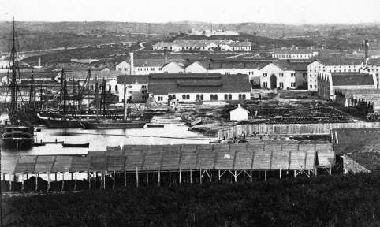
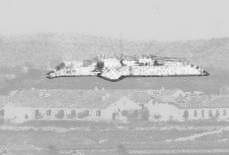
It was decided to demolish Fort Zaro and to erect in its place a modern building for the Hydrographic Office with all the necessary facilities; work began in 1869. The location was no accident: the building could be seen from almost anywhere in the harbour, giving ships an unobstructed view of the time-signal apparatus on its roof.
The Austro-Hungarian Naval Observatory in Pula was founded in 1869 as one of the departments of the Navy's Imperial and Royal Hydrographic Office (K. und K. Hydrographisches Amt). Its construction was included in the 1870 budget by Vice-Admiral Wilhelm von Tegetthoff and approved by Emperor Franz Joseph I on 10 September 1869. With the founding of the Office, part of the equipment of the Trieste observatory was moved to the Observatory in Pula.
By 1871 the new Hydrographic Office building stood on the site of the former fort, designed also as an observatory charged with maintaining an accurate time service by astronomical methods. The Office had four departments:
- Observatoryastronomical observations and the time service
- Depot of nautical and physical instrumentsship's instruments and chronometers
- Depot of nautical chartscharts for navigation in the Adriatic and worldwide
- Navy Librarythe Navy's scientific and technical library
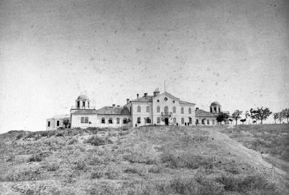
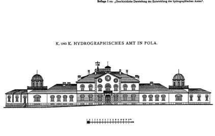
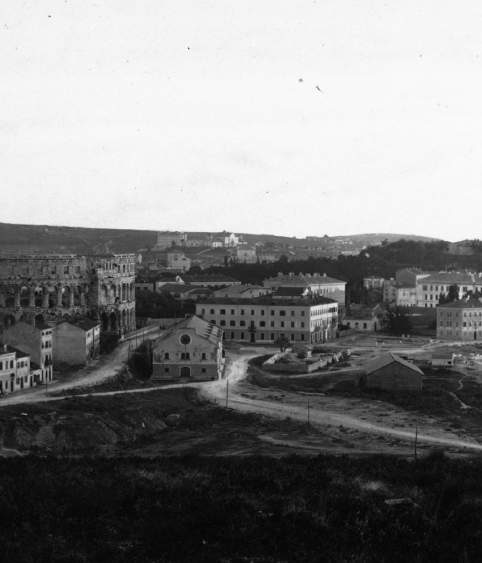
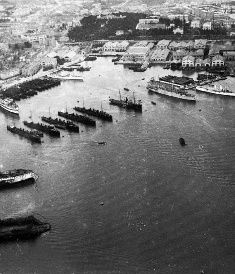
The golden age of the Naval Observatory
The Imperial and Royal Naval Observatory in Pula (K.u.K. Marine-Sternwarte) is the oldest astronomical institution in what is today the Republic of Croatia. To support precise navigation, four services were organised there, using instruments that were very modern for their time:
- Time servicetiming the meridian transits of stars and giving the time signal to ships in the harbour
- Chronometer servicecare of the ship's chronometers of the Austrian Navy
- Geomagnetic serviceamong other things, a geomagnetic map of the Adriatic published in 1913
- Meteorological servicemeasurements with instruments that were then state of the art
Besides its core duties, each service also made a scientific contribution. The staff of the Observatory department, who were military personnel, went beyond the tasks prescribed by the Statute and largely on their own initiative carried out other astronomical observations as well. Thanks to the exceptional dedication of the astronomer Johann Palisa, within about ten years (1871–1880) the Naval Observatory in Pula earned a permanent place among the world's eminent astronomical observatories.
That some of the instruments of the time are still standard equipment at weather stations is shown by the heliograph (sunshine recorder) — a simple instrument that measures the number of hours of sunshine in a day. Such an instrument still exists at the Observatory and is used for daily measurements.
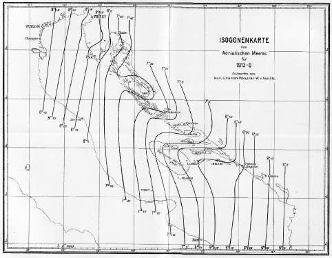
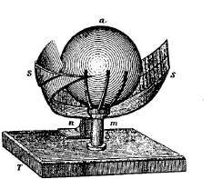
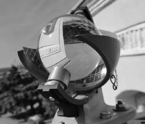
The Tegetthoff monument and the park
In 1877 a monument was erected in front of the Hydrographic Office to Vice-Admiral Wilhelm von Tegetthoff, who had become famous in 1866 when, as commander of the Austrian fleet, he defeated the Italian fleet at the Battle of Lissa (Vis). Photographs from the late 19th and early 20th centuries rarely show the building in its entirety; some still show all the domes and the proportions of the large meridian dome, from which the transit times of stars across the meridian were measured.
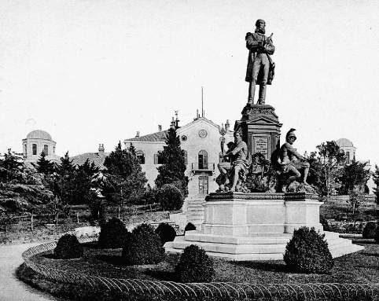
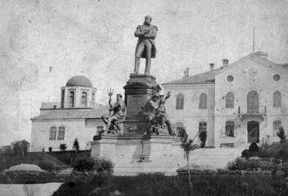
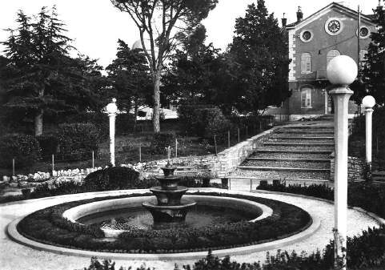
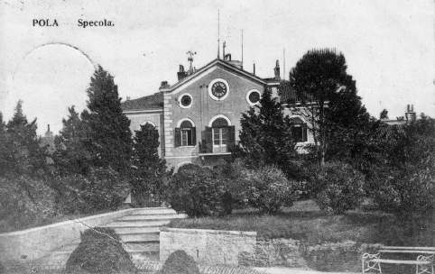
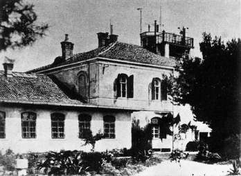
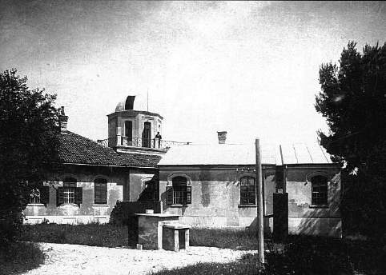
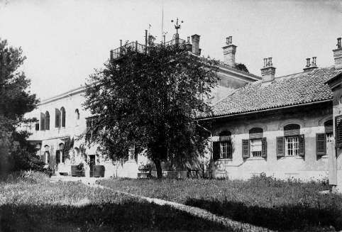
Johann Palisa – asteroid hunter
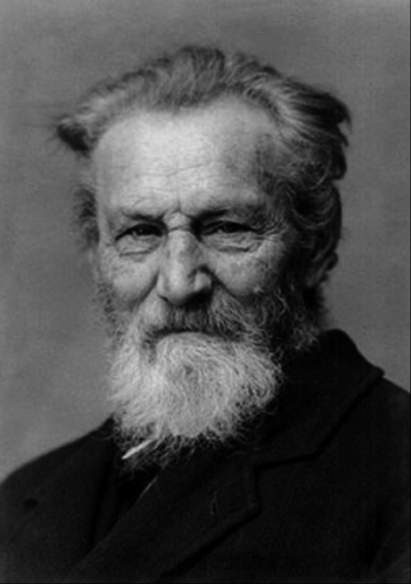
The most celebrated astronomer through whom the Pula Observatory secured its place in history is Johann Palisa. He was born on 6 December 1848 in Troppau, then in Austria (today Opava, Czech Republic), the eldest son of the local merchant Franz Palisa and his wife Katharina. He completed primary school and grammar school in his native Opava, and in 1866 enrolled in mathematics at the University of Vienna, where his teachers included Carl von Littrow, Edmund Weiss and Theodor von Oppolzer.
He put his studies of mathematics and astronomy into practice as an assistant at the Vienna Observatory in 1870, where he worked on determining the positions of stars and planets and on drawing sunspots. Early in 1871 he was transferred to the Geneva Observatory, and only a few months later to the Naval Observatory in Pula, where at just 24 years of age he became head of the Astronomical Department. His main duty was the care of the ship's chronometers of the Austrian Navy, and since his regular work left him enough free time, he began searching for minor planets.
While observing known minor planets, he also looked for new ones. His efforts were rewarded on 18 March 1874, when he discovered his first minor planet — as the first asteroid discovered from Austria, he named it (136) Austria. From Pula he discovered a total of 28 asteroids and one comet (C/1879 Q1), one of the asteroids being named "Istria".
During his visit to Pula on 8 April 1875, Emperor Franz Joseph I personally named two newly discovered minor planets: (142) Polana and (143) Adria. Adding (183) Istria, there are three celestial bodies in space that bear the names of our local places: Polana (a woman of Pula), Adria (the Adriatic) and Istria (Istra).
Minor planets (asteroids) discovered by Palisa from Pula
Choose a year or click a highlighted body for more information.
Pula on the world stage
The statistics from his years in Pula show just how much Palisa's discoveries meant on a world scale. In 1879 Palisa discovered half of all new asteroids found worldwide, and in 1880 — the year he was promoted to the Vienna Observatory — as many as 63%.
| Year | Palisa | Rest of the world | Total | Palisa's share |
|---|
After Pula
In 1880 Palisa was promoted to the Vienna Observatory, from where he discovered another 94 minor planets — 123 in total. As far as is known, he discovered all of them visually, observing through the telescope with the "naked" eye, and he still holds the record for the most visual discoveries. Together with Max Wolf of the Heidelberg Observatory he also produced a photographic star atlas.
In recognition by the International Astronomical Union, besides a crater on the Moon, two asteroids bear Palisa's name: (914) Palisana, named after him, and (1152) Pawona, named in honour of Johann Palisa and Max Wolf.
In his 71st year (1919) Palisa's eyesight began to fail. He died on 2 May 1925. On 15 October 2000 a memorial plaque was placed on the site of the house where he was born, bearing Palisa's favourite saying:
"Sic itur ad astra" — Thus one goes to the stars.
Palisa in space: 243 Ida
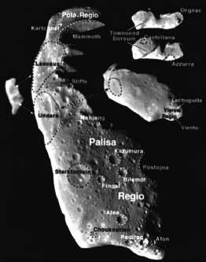
Space probes on their way to the outer planets of the Solar System had to pass close to some of the asteroids. Since Palisa mostly discovered large asteroids, some of them have been imaged by probes — namely the asteroids 243 Ida and 253 Mathilde.
To general surprise, images taken by the Galileo probe in 1993 showed that Ida has a natural satellite, named Dactyl. Because Ida was imaged in great detail, it became the first asteroid whose geological features were given names: three regions were named Palisa (after its discoverer) and Vienna and Pola (after the observatories from which Palisa hunted for asteroids).
Baron Ivo Benko von Boinik and other astronomers
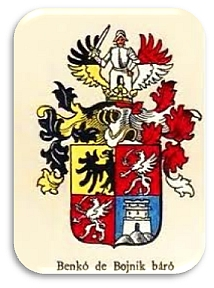
Of the astronomers who served at the Naval Observatory in Pula after Johann Palisa, the most important was Ivo Benko. He was born on 26 September 1851 in Karlovac. He was admitted to the Austrian Navy on 27 July 1868 as a cadet of the Naval Academy in Rijeka, and entered active service on 28 April 1872 with the rank of ensign (Linienschiffsfähnrich). He served on the ships "Helgoland", "Adria" and "Kerka".
In 1884/1885 he was acting director of the Naval Observatory in Pula. Inspired by scientific work and proving himself an excellent observer, he enrolled as an external student of astronomy in Graz. Until 1893 he served on the ships "Lissa", "Minerva", "Custoza", "Zriny", "Don Juan", "Laudon", "Radetzky" and "Taurus", when, after the death of director Franz Laschober, he took over the management of the Observatory.
Realising that the scientific programme could not continue with discoveries like Palisa's, Benko developed a programme of systematic observations and for this purpose had the meridian circle and other instruments refurbished. He published the results of his ten years as director in the leading journal of the day, "Astronomische Nachrichten", as well as in "Astronomische Rundschau", published by the astronomer Leo Brenner of the "Manora" observatory in Mali Lošinj. He stepped down as director in 1901 for health reasons.
His place in the history of astronomy was earned by a single observation, made on 4 February 1898, with which he showed that the Earth has no second, dark, natural satellite. An asteroid discovered from Višnjan Observatory was named (9814) Ivobenko in his honour. The first Croatian professional astronomer died on 21 December 1903 in Gorizia.
"To his Croatian people he remained a faithful and devoted son until his death, one who through his work brought honour to its name in the world. He followed events in his homeland with lively interest. Allow me to relate one small episode. When in February 1901 he learned that a Croatian secondary-school pupil, Dolanski, had independently discovered a new star in Perseus, the news delighted him greatly, and he urged me in a letter to be sure to publish it in ‘Astronomische Nachrichten’, which I did (Astr. Nachr. no. 3699, 1901). ‘It will do no harm,’ he wrote, ‘if the astronomical world learns that in our homeland, too, eyes are sometimes turned to the vault of the heavens, and that education there stands at such a high level.’" — Oton Kučera, Croatian astronomer at whose initiative an observatory was built in Zagreb in 1903 (translated from Croatian)
Besides Palisa and Benko, other notable names associated with the Pula Observatory include Bernhard Walter, Spiridion Gopčević (Leo Brenner), Oton Kučera and Niko Miličević.
Historic instruments
More extensive research into the history of the Pula Observatory has revealed the existence of the following astronomical instruments at the Imperial and Royal Naval Observatory in Pula. Filter them by where they are today.
"Brunner" transit instrument
Made in the mechanical workshop of the Polytechnic Institute in Vienna. It was used at the Observatory while it was still in Trieste, and was brought to Pula in 1866, together with the Observatory itself. It was installed in the meridian hall, where it served the time service and the determination of geographic longitude and latitude. It was removed in 1874.
"Schaffler" refractor
- 170 mm objective
- 2500 mm focal length
- German equatorial mount
- 240 mm setting circles
Made by the Viennese instrument maker Otto Schaffler.
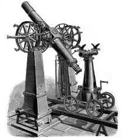
"Troughton & Simms" meridian circle
- 160 mm objective
- 2105 mm focal length
- 900 mm graduated circles
- 4 reading microscopes on each side
Made by the English firm "Troughton & Simms". It was used for the time service and for determining the positions of stars needed to compile star catalogues.
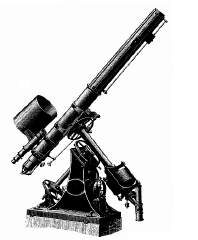
"Brachyt" reflector
- 300 mm mirror
- the largest reflector of its kind in the world
Made by the Viennese firm Fritsch. Salt particles carried by the wind from the sea all too often ruined the silver coating of the mirrors, so the telescope was removed as early as 1886.
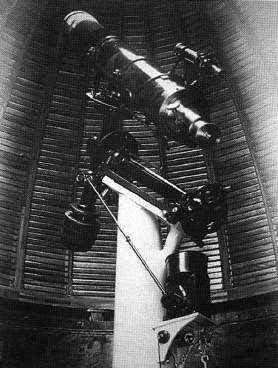
"Steinheil" refractor
- 160 mm objective*
- 2100 mm focal length
The objective was made by the firm Reinfelder und Hertel. It was used for observing comets and drawing sunspots.
* According to the booklet "150 Years of the Observatory in Pula"; earlier texts give an aperture of 60 mm.
"Repsold" transit instrument
It was used by the Time Service whenever the meridian circle was occupied with determining star positions. Its optical characteristics are not known.
The Navy Library (K. u. k. Marine-Bibliothek)
The Navy Library (Marine-Bibliothek), later called the Imperial and Royal Navy Library (K. u. k. Marine-Bibliothek), was founded at the high command of the Austrian Navy in Venice in 1802, at the initiative of the Minister of the Navy and of War, Archduke Charles. From the very beginning it was a scientific and technical library serving the needs of the Navy.
At the request of the naval commander, Archduke Ferdinand Maximilian, Pula was developed in the 1860s into the main naval base of the Austrian Navy. In line with Vice-Admiral Wilhelm von Tegetthoff's plan for reorganising the Navy, the Hydrographic Office (Hydrographisches Amt) was established in Pula in 1869, and the Navy Library was incorporated into it as a separate department.
More information on the website of the University Library in Pula.
- 1802 – Venicefounded at the high command of the Navy
- 1850 – Triestethe entire collection moved from Venice to Trieste
- 1869 – Pulathe library becomes a department of the Hydrographic Office
- 1918with the collapse of Austria-Hungary, the library is taken over by the Italian army
- 1944after Italy's capitulation (1943), the German army takes the entire collection by train to Bohemia
- 1950 – Viennathe collection is returned to Vienna and housed in the War Archives
- 1975 – back to Pulasome 20,000 volumes are given "as a gesture of goodwill" by the Republic of Austria to the Scientific Library (today the University Library)
- 1996/1997move to the Croatian Defenders' Hall (the former Marine-Kasino) and reopening to the public
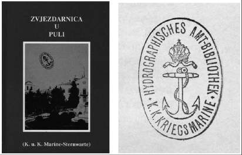
Vice-Admiral Wilhelm von Tegetthoff
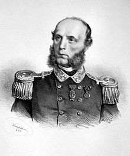
Wilhelm von Tegetthoff was born in Maribor (German: Marburg), Slovenia, on 23 December 1827, the second child of Karl and Leopoldine Tegetthoff. The house where he was born stands at Slovenska ulica 12, today the site of a Ljubljanska banka building. After the Naval Academy in Venice, which he attended from 1840 to 1845, he rose steadily through the ranks of the Navy.
A native of Maribor, German on his father's side (from Westphalia) and Czech on his mother's, he first drew attention in the Crimean War, where he commanded the steamer "Taurus". He reached the very top of the naval command after distinguishing himself in 1864 as commander of the Austrian squadron at the naval Battle of Heligoland in the war against Denmark, when he was promoted to rear admiral.
The Battle of Lissa (Vis), 1866
On 19 July 1866, having received a telegram from the island of Vis reporting that it was under siege and attack by the Italian fleet, he sailed out of the Fažana Channel at the head of the Austrian Navy and, after only 15 hours at sea, arrived off Vis on 20 July. He knew he was facing an enemy three times stronger, with heavier artillery and five more ironclads, but also that the outcome of a battle is decided not only by numbers but by preparation and courage. In a naval battle unprecedented in the Adriatic until then, the Austrian Navy defeated the Italian fleet commanded by Admiral Carlo Pellion di Persano. The flagship "Ferdinand Max" rammed the side of the Italian ironclad "Re d'Italia" with tremendous force, and she sank within two and a half minutes. The Austrian fleet lost not a single ship; 35 sailors and three officers were killed. This victory secured Vienna half a century of dominance over the Adriatic Sea.
«Busali smo se jedan u drugega kako da smo prazi. Jedan dobar tir i brod gre u konobu.» — Mate Jurašin – Matesina, one of the three men from Premantura who fought at Lissa ("We butted into each other like rams. One good hit and the ship goes down to the cellar – to the bottom of the sea.")
Founder of the Observatory
In 1868 Tegetthoff launched a reorganisation of the Navy that also covered its scientific activities. Recognising that the existing situation would leave Austria lagging behind other navies, he proposed that the construction of a Hydrographic Office (observatory) in Pula be included in the 1870 budget, which Emperor Franz Joseph I approved on 10 September 1869. The inscription on the monument read:
«Viceadmiralu Wilhelmu Tegetthoffu, car Franjo Josip I, 1877., hrabrom borcu kod Helgolanda, slavno pobijednio kod Visa i stekao vječnu slavu za sebe i za austrijsku flotu». ("To Vice-Admiral Wilhelm Tegetthoff, Emperor Franz Joseph I, 1877 – to the valiant fighter at Heligoland, who won a glorious victory at Lissa and earned eternal glory for himself and for the Austrian fleet.")
After the Italian army occupied Pula in 1918, the monument erected in front of the Observatory in 1877 was removed on 14 April 1920. Only on the eve of the Second World War did Italy hand it over to Austria, and it was set up in Elisabethplatz (Elizabeth Square) in Graz, the city where the famous vice-admiral is buried, and where it still stands today. In 1998 a replica of the monument to the Battle of Lissa was re-erected on Vis.
Between the wars, bombing and destruction
After the collapse of Austria-Hungary and the Italian military occupation of Pula on 5 November 1918, the Observatory ceased its activities. The instruments and the library were largely moved to Trieste and other Italian cities, and the monument to Admiral Tegetthoff, at whose initiative the Hydrographic Office had been founded, was removed.
The fate of the Observatory mirrored the general stagnation of the town of Pula. The Hydrographic Office was renamed the Italian Royal Hydrographic Institute, with the status of a branch of the central Italian hydrographic institution. Meteorological and geomagnetic observations continued, while astronomical work died out completely.
After the withdrawal of the Italian forces, Anglo-American aircraft bombed Pula on several occasions during 1944. Because the Hydrographic Office and the Observatory were still marked on maps as military installations, Allied bombs razed the building to the ground. Photographs taken during the bombing raids show the Observatory still intact, and then hit directly and destroyed.
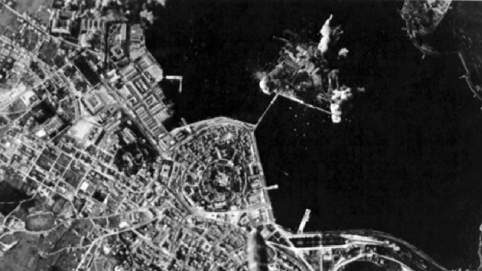
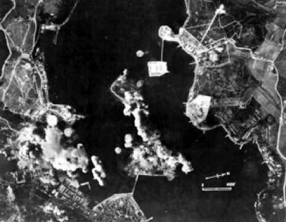
What survived?
Only part of the north-east wing was partially preserved, while the rest was destroyed down to the foundations. From the original floor plans it can be estimated that only one smaller section of the building and just one dome remained. Switch the view on the floor plan:
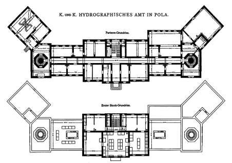
Floor plan of the ground floor (top) and first floor (bottom). Red: the part of the building that survived the bombing (according to the booklet "150 Years of the Observatory in Pula").
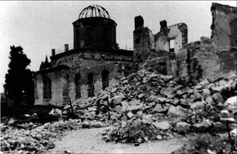
The weather station and the surviving domes
The partially preserved section of the north-east wing was restored in 1947/1948 and housed a weather station of the Yugoslav Navy. In 1949 the station was taken over by the newly founded Administration of the Hydrometeorological Service of the Government of the People's Republic of Croatia, today's Croatian Meteorological and Hydrological Service (DHMZ).
The restoration of the Observatory's remains was not entirely successful, mostly for technical reasons. Air temperature, pressure and humidity were measured in an instrument shelter within a fenced enclosure in front of the building, while the heliograph and anemometer were mounted on an auxiliary scaffold on the south side of the dome. Two meteorologists' families moved into the building and continued the observations from Monte Zaro. Meteorological observations are still carried out from the same location today — the DHMZ station on Monte Zaro now has the status of a climatological station.
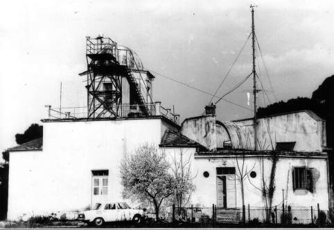
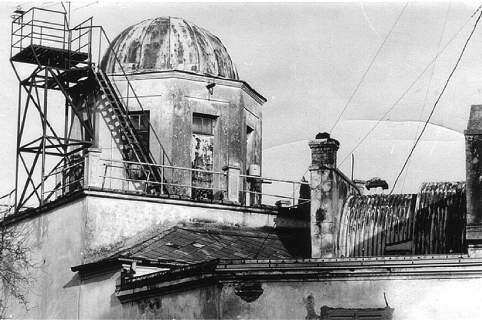
Two domes
During the repairs two domes were reconstructed — the classic dome and the meridian dome. The frame of the classic dome that survived the bombing was used to restore its original shape, clad with timber on the inside and galvanised sheet metal on the outside. The mechanism for rotating the hemispherical dome remained usable, as did part of the opening mechanism. The slit, however, was repaired in such a way that observations were possible only up to 30° above the horizon, leaving the largest and best part of the sky out of reach. The blasts during the bombing also distorted the dome itself, so the force needed to turn it depends on the position of the slit. Since the dome was not in use at the time, there was not even any access to it — the stairs led only as far as the terrace.
The interior of the main dome and its original opening and rotating functions have been fully preserved to this day. The axial ball bearing on which the dome rests was cast, at the time the Observatory was built, in the Pula Arsenal, where such bearings were made for the gun turrets of Austro-Hungarian warships. To the best of our knowledge, it is the largest bearing of its kind still in operation.
The meridian dome suffered more severe damage: its mechanism survives in its original form but cannot be used. Only the outer covering was reconstructed to protect the dome from further decay; the gear shafts were bent by the force of the blasts and the chain drives are incomplete, so its restoration is still waiting for better days.
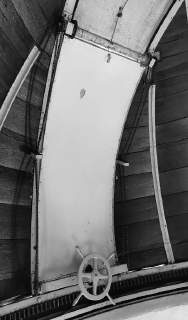
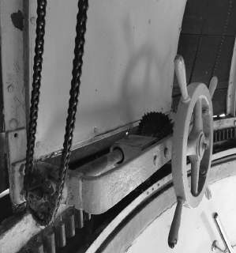
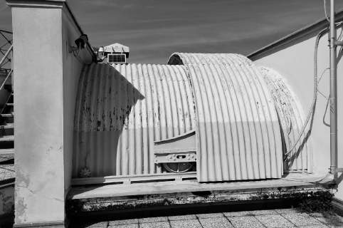
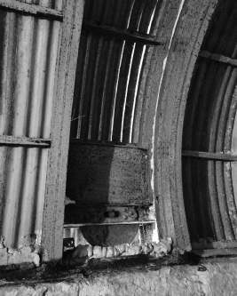
Astronomical Society "Istra" Pula
The Astronomical Society "Istra" Pula (ADIP) was founded on 27 December 1973, at a time of great exploratory ventures in astronomy and astronautics, when the thirst for knowledge was hard to quench owing to a lack of literature, resources and organisation. The society's primary mission was to popularise astronomy and the other natural sciences through lectures and observations of celestial phenomena for people of all ages.
Close ties with schools led to a large number of pupils taking astronomy as an elective subject, and in the late 1970s excellent results were achieved in the competitions of the "Nauka mladima" (Science for Youth) movement, organised by the then Narodna tehnika (People's Technology), the forerunner of today's Community of Technical Culture.
Telescopes were not as readily available as they are today — besides high prices, state import restrictions were also a problem. Nevertheless, in 1975 the society raised the funds to buy a "Celestron 8" telescope, which is still in use today. For several months it was displayed in the shop window of "Narodna tehnika", catching the eye of passers-by. In those days observations were held on the rooftop terraces of buildings in the town centre or just outside town — light pollution was far lower than it is today.
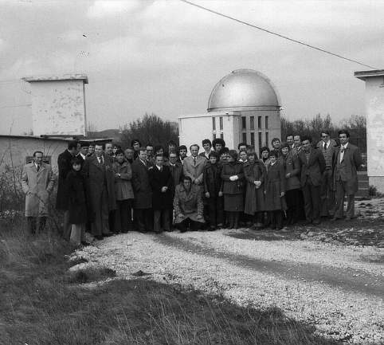
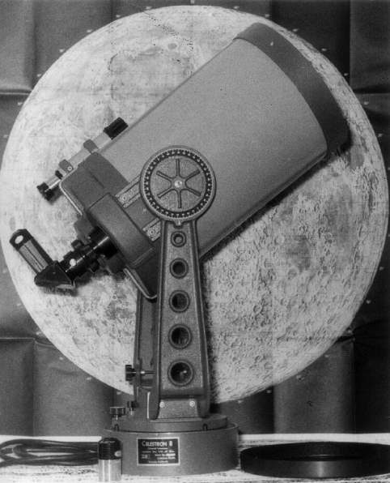
Although in its early days the society had no direct link with the Observatory, it cherished its heritage. For the centenary of the discovery of the asteroid "Istria" (1978) a special lecture was held along with an exhibition of works and telescopes made by the members themselves, and several hundred people attended the celebration. Together with the "Arena" philatelic society, a philatelic exhibition on astronomy and astronautics was organised, and a commemorative envelope and a special badge were issued.
A request to use the building was sent as early as 1974 to the then Republic Hydrometeorological Institute, the owner of the building, which agreed in principle. Since two meteorologists' families were living in the building, it was necessary to wait until they were rehoused, so in 1979 the society was at first given the use of just two auxiliary rooms on the east side of the building.
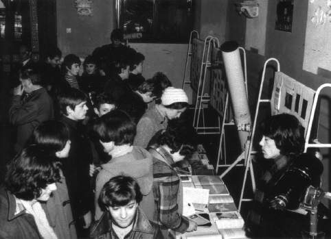
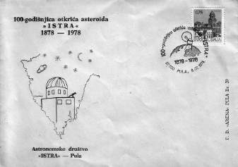
1982: the Observatory becomes ADIP's home
In 1982 the Observatory was handed over for use to the Astronomical Society "Istra" Pula, which revived astronomical observations there. The building was in a very dilapidated state, so the members immediately set about refurbishing it — room by room, with the help of local enterprises and a great deal of volunteer work. Because the dome was inaccessible at the time, observations were made from the meadows on Monte Zaro, by the fountain, and partly from the terrace and the meteorological scaffold.
At the society's proposal, on 30 May 1983, by decision no. 435 of the Regional Institute for the Protection of Monuments in Rijeka, the Observatory was declared a cultural monument of category C.
The Observatory brought new momentum: members took up astrophotography, primarily of the Sun, and regular visual observations were made of the Moon, the planets and the major meteor showers (mostly the Perseids and Orionids, as the weather usually prevented observation of the Geminids and Quadrantids). The Observatory also hosted the "Nauka mladima" school competitions, at which each pupil presented, in addition to a written part, a practical project — from observations of meteors, planets or variable stars to studies of the efficiency of solar energy use. The most successful were rewarded with an astronomy camp on the island of Prvić.
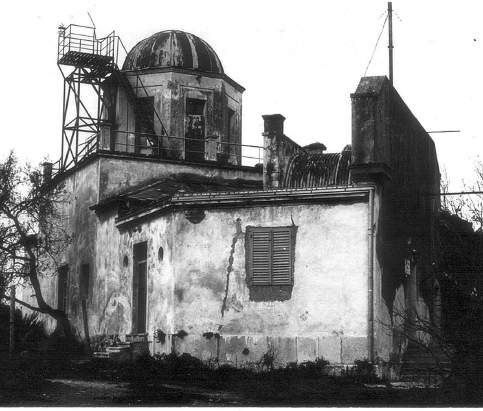
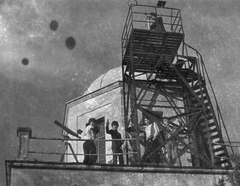
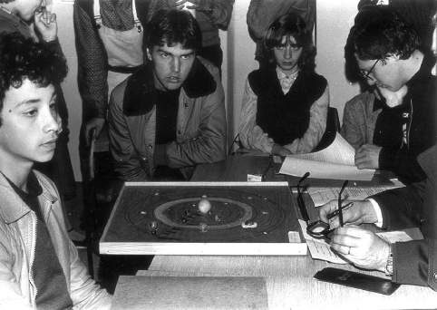
In 1985 society member Zdenko Kovač, as his architecture degree thesis, drew up a project for the restoration of the Observatory and its extension with a planetarium. The project was accepted, but amid the political turmoil and the war it fell into oblivion.
In 1991 Edi Puh (then a member, later secretary) published the book "Zvjezdarnica u Puli: 1871–1991. (građa za povijest Istre)" [The Observatory in Pula: 1871–1991 (materials for the history of Istria)], which presents the history of the Observatory in a simple, accessible way and is the reference point for anyone wishing to go into the details.
The Croatian War of Independence brought the society's work largely to a halt. Thanks to the exceptional efforts of individuals — above all the then secretary Edi Puh and president Lorenzo Putigna — the Observatory was saved from further decay.
With the help of the "Uljanik" shipyard, access to the main dome was finally sorted out in 1999 and the dome was made usable again for astronomical observations, so that the Observatory could once again receive visitors. That same year, during the partial solar eclipse of 11 August 1999, almost all active members were on hand to help and explain the phenomenon — it is estimated that several thousand people watched the eclipse together with us on Monte Zaro that day.
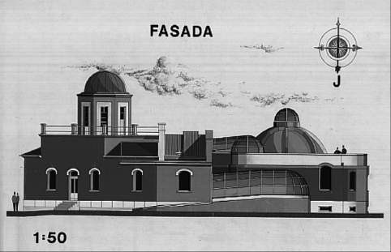
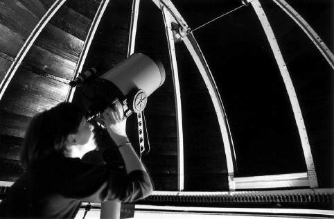
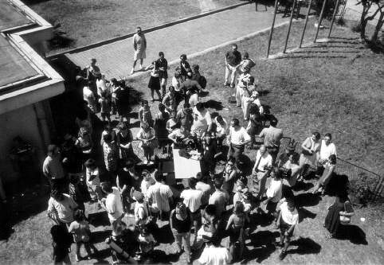
Comprehensive restoration in four phases
Although the society's members continuously maintained the Observatory as far as their means and the funds they received from the City of Pula allowed, this was not enough. In early 2006, therefore, the City of Pula launched a comprehensive restoration of the building in four phases.
In the first phase the roof over the central part of the Observatory building was repaired.
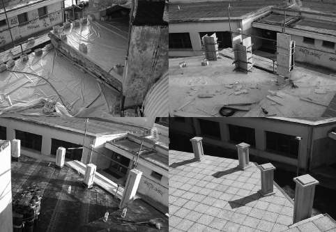
The second phase, carried out in 2007, completed the eastern part of the terrace, which until then could not be used. This gave the Observatory a very valuable space for open-air lectures and for some of its public observing sessions.
Thanks to a donation from a telecommunications company, the society bought a Celestron 11 telescope and installed it in the main dome.
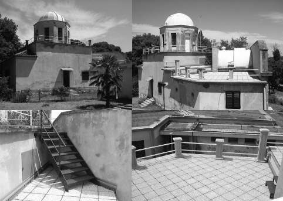
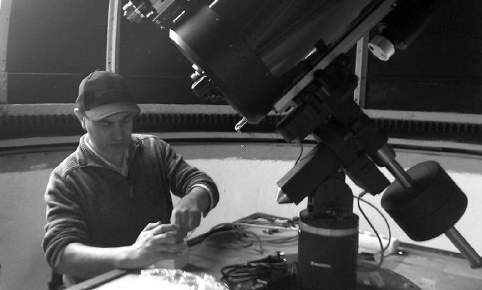
The third phase, in 2008, covered the roofs around the dome, finally solving the long-standing problem of leaks after many years.
Work also began on the south façade, which had once been a partition wall — its entrance had connected the central building with the wings carrying the domes.
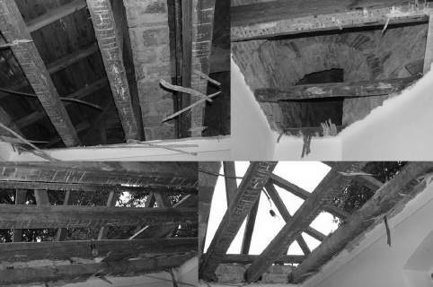
The final phase, in 2009, covered the façades, which were demanding in many respects. To preserve the original appearance of the building as far as possible, all surviving details were reconstructed. The meridian dome was not included in the restoration.
The Observatory took on its final form in early May 2009, and its reopening was marked with a special event. The terrace, the façade and the surroundings were fully restored.
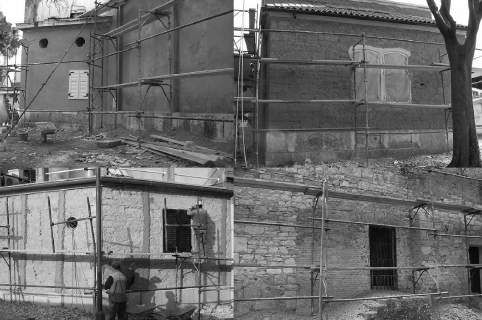
The Observatory today
Once the restoration was completed, work with young people resumed and the popularisation of astronomy continued through public observing sessions and lectures. The Observatory is visited by many groups of school and university students — sometimes more than a hundred participants at once — who learn about its history and its importance for the development of astronomy worldwide. Alongside the history, younger children also learn the basics of how the bodies of the Solar System move through an interactive presentation.
In 2010 the society received the Charter of the Croatian Community of Technical Culture (HZTK) for its many years of outstanding contribution to the development and promotion of technical culture and astronomy and to the preservation of a cultural monument — the Observatory in Pula.
Young members at the Observatory prepare projects for the astronomy competitions run under the Education and Teacher Training Agency and present them at a joint lecture, with their parents in the audience. Since 2009 the number of pupils taking part in the competitions has risen sharply; every year at least a few of them reach the national competition, where some have even won first place. Members also go out into the field, observing the Sun with the necessary safety precautions and warning of the danger of looking directly at the Sun.
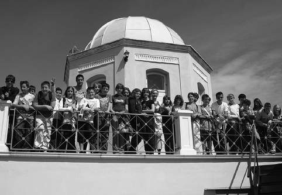
From a single camera to a global meteor network
While the restoration was still under way, during the maximum of the Perseids in 2006, CCTV cameras were tested at the Observatory for observing meteors. The experiment was highly successful and gave rise to the Croatian Meteor Network (HMM) project, in which more than 40 organisations and individuals across Croatia took part, with several cameras also in neighbouring countries.
Besides meteors, the cameras recorded lightning strikes and also rarely observed transient phenomena in the Earth's atmosphere — so-called "sprites" (Croatian «vatrenjak»).
The project succeeded beyond all expectations. In cooperation with the Višnjan Science and Education Centre, it produced a large number of young astronomers whose own solutions improved on what had until then been the standard methods of meteor observation. As a result, since 2018 there has been the Global Meteor Network (GMN), which in 2021 passed 500 cameras worldwide. HMM has so far been credited with the discovery of 8 new meteor showers, and society members have presented their results at several editions of the International Meteor Conference.
Alongside the all-sky camera, a camera for telescopic meteors — too faint to be seen with the naked eye — has also been installed at the Observatory; because of its much smaller field of view it records fewer of them. Meteor observations — including those from the Observatory in Pula — are used by leading astronomical organisations around the world, among them NASA.
Every year society members take an active part in the Science Festival. In 2016, together with Pula's "Metris", they presented an analysis of the "Križevci" meteorite, in whose recovery the society played a very important role. The society also takes part in joint projects of the Croatian Astronomical Union, such as "Women in Astronomy", and members give talks at amateur astronomers' meetings and related events, always striving to spread knowledge about the history of the Observatory.
The COVID-19 pandemic halted public activities, but meteor observing continued without interruption, and alongside the observations, scientific papers based on our own data are being published. We are especially pleased that a growing number of former young members — today engineers, holders of master's degrees and PhDs — stay in touch with the society and are happy to join in its activities.
The Croatian Community of Technical Culture (HZTK) — the umbrella organisation to which ADIP also belongs — is the historical successor of the Republic Commission "Technology and Sport", founded on 23 June 1946 in Zagreb, whose first president was the academician Andrija Mohorovičić. Istria established its branch in 1947. Today the Community brings together 18 national associations and 19 county and 35 city communities of technical culture.
Visit the Observatory and see more photographs from its history.
Sources and acknowledgements
- D. Šegon (ed.): 150 godina Zvjezdarnice u Puli [150 Years of the Observatory in Pula], Community of Technical Culture Pula and Astronomical Society "Istra" Pula, 2021 — available on the Downloads page.
- E. Puh: Zvjezdarnica u Puli: 1871–1991. (građa za povijest Istre) [The Observatory in Pula: 1871–1991 (materials for the history of Istria)], Histria Historica, special edition, 1991.
- Data on the discoveries of Johann Palisa and his contemporaries: Minor Planet Center.
- Historical photographs from the Austro-Hungarian era: Historical and Maritime Museum of Istria. Other photographs: archive of the Astronomical Society "Istra" Pula and the collections of Edi Puh and Luciano Gržinić; aerial photographs courtesy of Igor Karasi.
- Photograph of the Hydrographic Office building: Erminio Mioni.